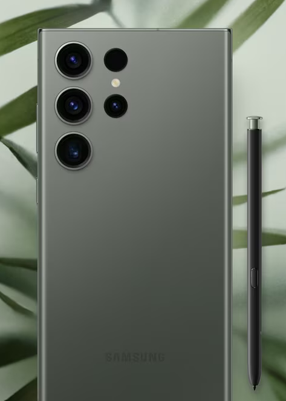
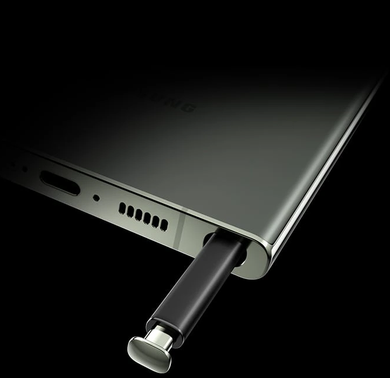

Дизайн
Возвращение выдающегося дизайна с одним важным отличием - использованием переработанных и экологически чистых материалов. При создании этого смартфона мы использовали переработанное стекло и натуральные красители для окрашивания алюминиевой рамки.
Перо S Pen
Встроенное перо S Pen для заметок, рисунков и смелых идей Для поклонников блокнотов и заметок от руки мы добавили встроенное электронное перо S Pen. Его использование создает ощущение обычного письма ручкой, но при этом вам не нужно тратить бумагу и заботиться о ее последующей утилизации.